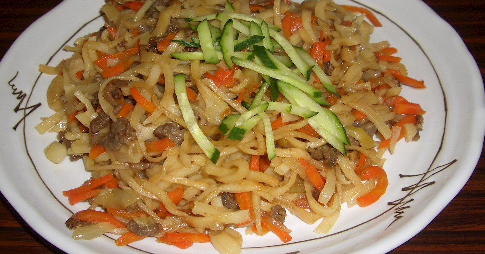

How to Make Mongolian Stir-Fry Noodle aka "Tsuivan"
Ingredients
- 300g beef or mutton, thinly sliced
- 1 large onion, thinly sliced
- 2 carrots, julienned
- 2 potatoes, peeled and thinly sliced
- 200g fresh noodles or dried egg noodles, cooked according to package instructions
- 2 tablespoons vegetable oil
- Salt and pepper to taste
- Soy sauce or hoisin sauce, for seasoning
Instructions:
- Heat vegetable oil in a large pan or wok over medium-high heat.
- Add the sliced meat and stir-fry until browned.
- Add sliced onion, julienned carrots, and sliced potatoes to the pan. Stir-fry for a few minutes until vegetables start to soften.
- Season with salt, pepper, and a splash of soy sauce or hoisin sauce for flavor.
- Add the cooked noodles to the pan and toss everything together until well combined and heated through.
- Adjust seasoning to taste and serve hot.
Voila, bon appetit! or "Saihan Hoollooroi!" in Mongolian.
